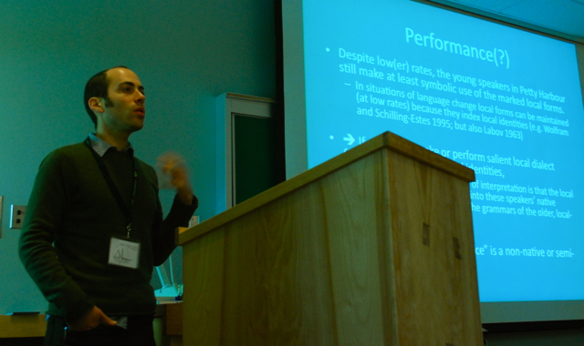

| 
Links// |
TeachingI teach a variety of courses, primarily centering on topics in sociolinguistics and corpus and computational linguistics. On this page, I list a few of my recent courses. Students: Please check UO Canvas for course materials. Corpus Linguistics (Ling 410/510)What is corpus linguistics? Is it a subfield of linguistics? A methodology? What is it good for? How do I do it?
African American English: Structure and Variation (Ling 407/507, Seminar)African American English (AAE) is by far the most researched, the most publicly recognized, and most controversial language variety in the United States. AAE has long been a central object of study in North American sociolinguistics, where researchers have investigated its structure, its origins, and its current trajectories of change relative to Mainstream American English, and have simultaneously sought to combat misunderstandings about AAE (and all language differences) held by the public and the press. In this seminar, we explore a range of these important topics in the study of AAE and in the societal applications for (socio)linguistic research. In addition to reading and discussing major works about African American English from several linguistic perspectives (primarily sociolinguistic), students also have the opportunity to conduct primary research or educational projects using the new Corpus of Regional African American Language, a public resource currently under development in the UO Linguistics Department. Sociolinguistics (Ling 491/591)This is an upper-level course in which we will explore the study of social variation in language and language use. The course surveys core areas and concepts of sociolinguistics and introduces the methods that sociolinguists use to study the relationships between society and language, language and identity, and language change. We approach our topics primarily from one of the most central theoretical approaches to language variation and change, exploring what is known as variationist sociolinguistics. We also consider the relationship between sociolinguistics and other areas of linguistic research. Finally, we address the educational and social outcomes of developing better knowledge of sociolinguistic variation.
Social Networks in Linguistics (Ling 407/507, Seminar)In this seminar we consider the nature of social networks and their role in language variation and change (e.g., as mechanisms for both the maintenance of community norms and the propagation of innovations). We approach the topic of social networks from four major perspectives: (a) sociolinguistics broadly, i.e. the ways social networks have been used and conceptualized in sociolinguistic community studies; (b) computer-mediated discourse and properties of online communities (briefly); (c) theories and methods of formal social network analysis (SNA); and (d) modeling/simulating language change via network models. For each of these topics we will read and discuss a range of literature and consider actual research applications. Students will design research projects from one of these perspectives. Other & older coursesSociophonetics Seminar (Ling 407/507; Winter 2014) See my CV for a more comprehensive list of the courses I have taught. | |
|
Last updated: January 2023, Tyler Kendall | ||